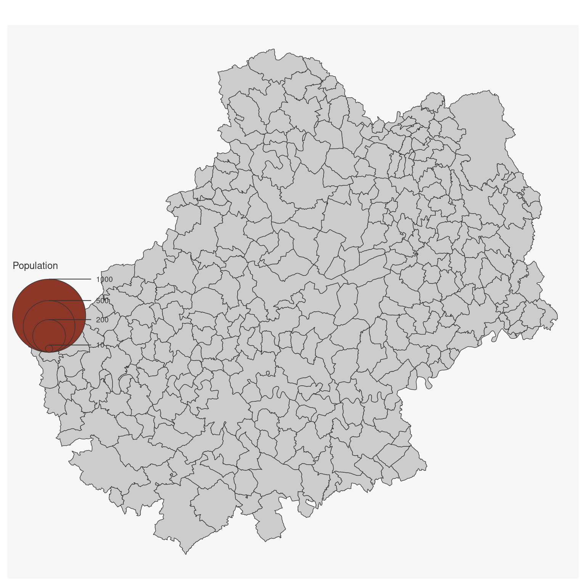
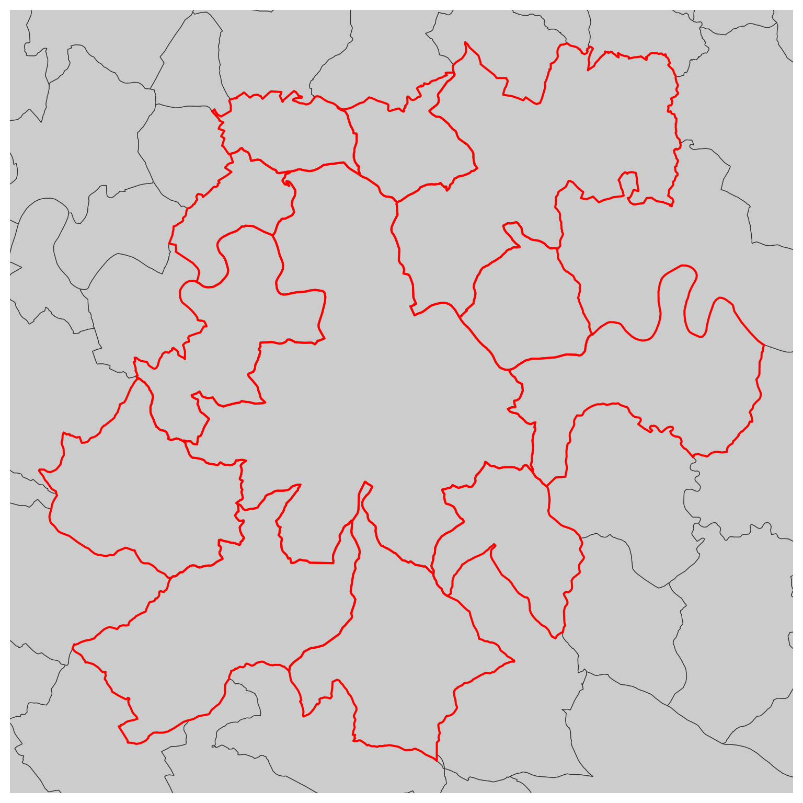
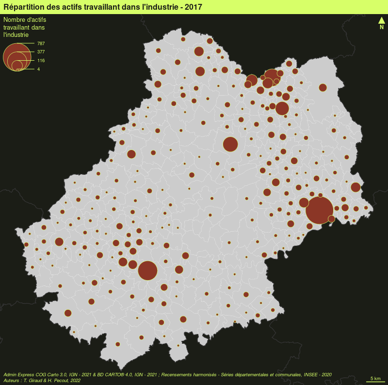
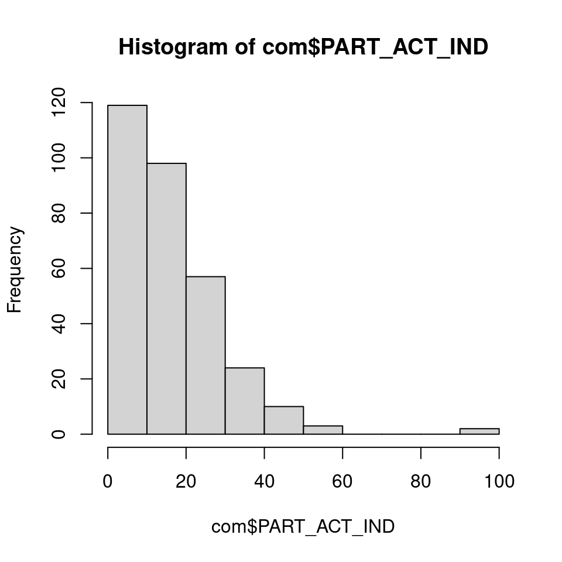
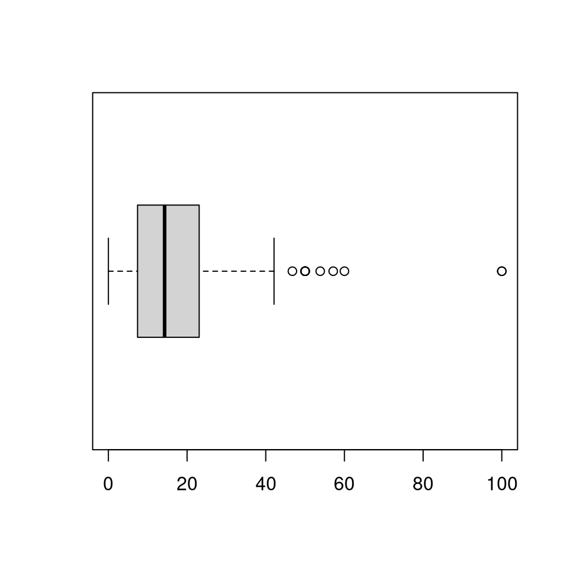
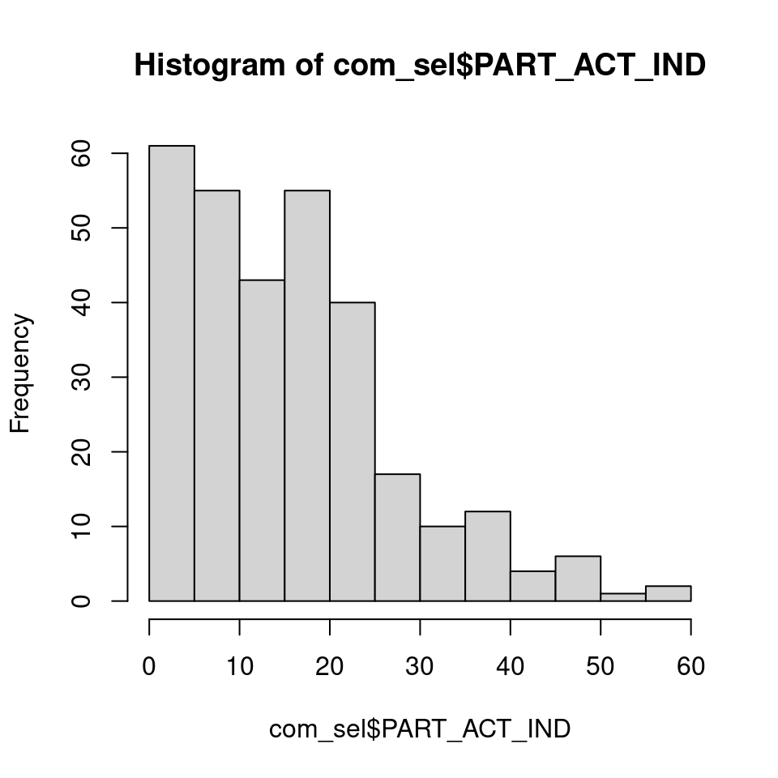
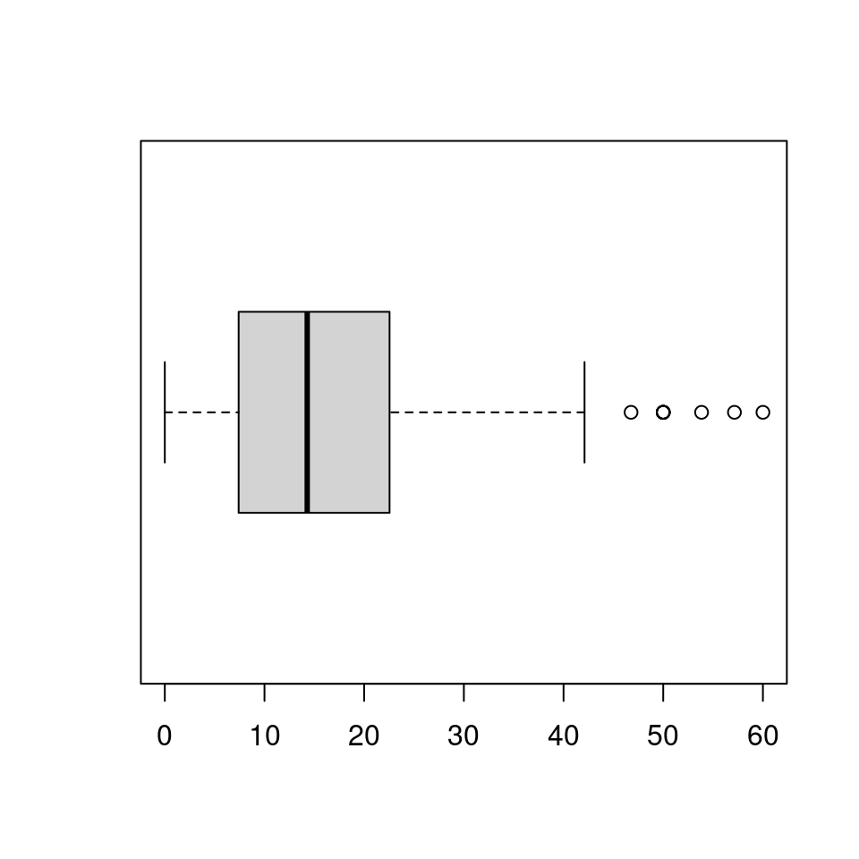
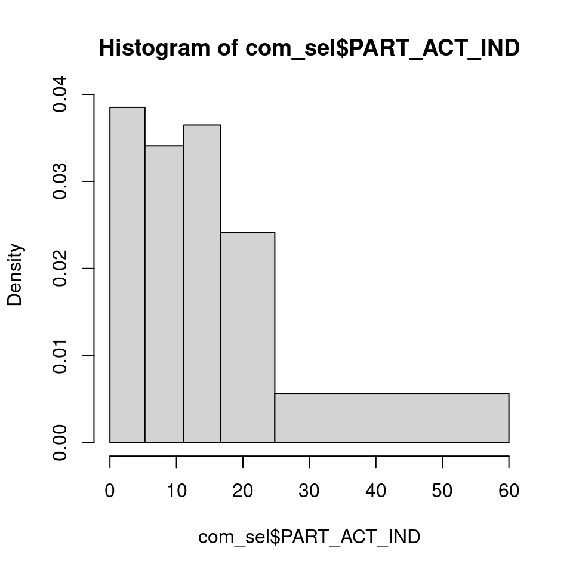

Chapitre 3 La mise en page
Pour être finalisée, une carte thématique doit contenir certains éléments additionnels tels que : le titre, l’auteur, la source, l’échelle, l’orientation…
3.1 Les données d’exemple
Les lignes suivantes importent les couches d’information spatiales situées dans le fichier geopackage lot46.gpkg.
library(sf)
# import des communes du Lot
com <- st_read("data/lot46.gpkg", layer = "commune", quiet = TRUE)
# import des départments français
dep <- st_read("data/lot46.gpkg", layer = "departement", quiet = TRUE)
# import des restaurants
resto <- st_read("data/lot46.gpkg", layer = "restaurant", quiet = TRUE)
# import des routes
route <- st_read("data/lot46.gpkg", layer = "route", quiet = TRUE)3.2 Les thèmes
La fonction mf_theme() défini un thème cartographique. L’utilisation d’un thème permet de définir plusieurs paramètres graphiques qui sont ensuite appliqués aux cartes créées avec mapsf. Ces paramètres sont : les marges de la carte, la couleur principale, la couleur de fond, la position et l’aspect du titre. Un thème peut également être défini avec les fonctions mf_init() et mf_export().
3.2.1 Utiliser un thème prédéfini
Une série de thèmes prédéfinis est disponible par défaut (voir ?mf_theme).
library(mapsf)
# utilisation d'une couleur de fond pour la figure, pour voir l'utilisation des marges
opar <- par(mfrow = c(2,2))
# Utilisation d'un thème prédéfini
mf_theme("default")
mf_map(com)
mf_title("Theme : 'default'")
mf_theme("darkula")
mf_map(com)
mf_title("Theme : 'darkula'")
mf_theme("candy")
mf_map(com)
mf_title("Theme : 'candy'")
mf_theme("nevermind")
mf_map(com)
mf_title("Theme : 'nevermind'")
par(opar)
3.2.2 Modifier un thème existant
Il est possible de modifier un thème existant. Dans cet exemple, nous utilisons le thème “default” et nous en modifions quelques paramètres.
library(mapsf)
opar <- par(mfrow = c(1,2))
mf_theme("default")
mf_map(com)
mf_title("default")
mf_theme("default", tab = FALSE, font = 4, bg = "grey60", pos = "center")
mf_map(com)
mf_title("modified default")
par(opar)
3.2.3 Créer un thème
Il est également possible de créer un thème.
mf_theme(
bg = "lightblue", # couleur de fond
fg = "tomato1", # couleur principale
mar = c(0,0,1.5,0), # marges
tab = FALSE, # style "onglet" pour le titre
inner = FALSE, # titre à l'intérieur de la zone de carte ou à l'extérieur
line = 1.5, # espace dédié au titre
pos = "center", # position du titre
cex = 1.2, # taille du titre
font = 2 # type de fonte pour le titre
)
mf_map(com)
mf_title("New theme")
3.3 Les titres
La fonction `mf_title() permet d’ajouter un titre à une carte.
mf_theme("default")
mf_map(com)
mf_title("Titre de la carte")
Il est possible de personnaliser l’aspect du titre.
mf_map(com)
mf_title(
txt = "Titre de la carte",
pos = "center",
tab = FALSE,
bg = "tomato3",
fg = "lightblue",
cex = 1,
line = 1.2,
font = 1,
inner = FALSE
)
3.4 Flèche d’orientation
La fonction mf_arrow() permet de choisir la position et l’aspect de la flèche d’orientation.
mf_map(com)
mf_arrow()
3.5 Échelle
La fonction mf_scale() permet de choisir la position et l’aspect de l’échelle.
mf_map(com)
mf_scale(
size = 20,
lwd = 2,
cex = 1.2,
)
3.6 Crédits
La fonction mf_credits() permet d’afficher une ligne de crédits (sources, auteur…).
mf_map(com)
mf_credits("IGN\nGiraud & Pécout, 2021")
3.7 Habillage complet
La fonction mf_layout() permet d’afficher tous ces éléments.
mf_map(com)
mf_layout(
title = "Martinique",
credits = "IGN\nGiraud & Pécout, 2021",
arrow = TRUE
)
3.8 Annotations
mf_map(com)
mf_annotation(com[com$NOM_COM == "Cahors",], txt = "Cahors", halo = TRUE, cex = 1.5)
3.9 Les légendes
mf_map(com)
mf_legend(
type = "prop",
val = c(1000,500,200,10),
inches = .4,
title = "Population",
pos = "topleft"
)
mf_legend(
type = "choro",
val = c(0,10,20,30,40),
pal = "Greens",
pos = "bottomright",
val_rnd = 0
)
3.10 Étiquettes
La fonction mf_label() est dédiée à l’afichage d’étiquettes.
com_sel <- com[st_intersects(com, com[com$NOM_COM == "Cahors", ], sparse = F), ]
mf_map(com_sel)
mf_label(
x = com_sel,
var = "NOM_COM",
col= "black",
halo = TRUE,
overlap = FALSE,
lines = FALSE
)
mf_scale()
L’argument halo = TRUE permet d’afficher un léger halo autour des étiquettes et l’argument overlap = FALSE permet de créer des étiquettes ne se recouvrant pas.
3.11 Centrer la carte sur une région
La fonction mf_init() permet d’initialiser une carte en la centrant sur une objet spatial.
mf_init(x = com_sel, theme = "iceberg")
mf_map(com, add = TRUE)
mf_map(com_sel, col = NA, border = "red", lwd = 2, add = TRUE)
3.12 Afficher plusieurs cartes sur la même figure
Il faut ici utiliser l’argument mfrow de la fonction par(). Le premier chiffre représente le nombre lignes et le deuxième le nombre de colonnes.
# define the figure layout (1 row, 2 columns)
par(mfrow = c(1, 2))
# first map
mf_map(com)
mf_map(com, "TER_H", "prop", val_max = 4000)
mf_title("Tertiaire, hommes")
# second map
mf_map(com)
mf_map(com, "TER_F", "prop", val_max = 4000)
mf_title("Tertiaire, femmes")
3.13 Export des cartes
Il est assez difficile d’exporter des figures (cartes ou autres) dont le ratio hauteur/largeur est satisfaisant. Le ratio par défaut des figures au format png est de 1 (480x480 pixels) :
c2c <- com[com$INSEE_COM == "46138", ]
png("img/c2c1.png")
mf_map(c2c)
mf_title("Cœur de Causse")
dev.off() Sur cette carte beaucoup d’espace est perdu au nord et au sud de la commune.
Sur cette carte beaucoup d’espace est perdu au nord et au sud de la commune.
La fonction mf_export() permet des exports de cartes dont le ratio hauteur/largeur est contrôlé et correspond à celui d’un objet spatial.
mf_export(c2c, "img/c2c2.png", width = 480)
mf_map(c2c)
mf_title("Cœur de Causse")
dev.off() L’emprise de cette carte est exactement celle de la région affichée.
L’emprise de cette carte est exactement celle de la région affichée.
3.14 Ajouter une image sur une carte
Cela peut être utile pour ajouter un logo, un pictogramme. La fonction readPNG()
du package png permet l’ajout d’images sur une figure.
mf_theme("default", mar = c(0,0,0,0))
library(png)
# import de l'image
logo <- readPNG("img/Logo CG 46 - Bleu.png")
# dimension de l'image en unité de la carte
pp <- dim(logo)[2:1] * 20
# Définition d'un point d'encrage de l'image dans la figure, ici
# le coin supérieur gauche de la bounding box du département
xy <- st_bbox(com)[c(1,4)]
mf_map(com, col = "#D1914D", border = "white")
rasterImage(
image = logo,
xleft = xy[1],
ybottom = xy[2] - pp[2],
xright = xy[1] + pp[1],
ytop = xy[2]
)
3.15 Placer précisément un élément sur la carte
La fonction locator() permet de cliquer sur une figure et d’obtenir les coordonnées d’un point dans le système de coordonnées de la figure (de la carte).
locator()peut être utilisée sur la plupart des graphiques (pas ceux produits avec ggplot2).
3.16 Ajouter un ombrage à une couche
La fonction mf_shadow() permet de créer une ombre à une couche de polygones.
mf_shadow(com)
mf_map(com, add=TRUE)
3.17 Création de cartons
La fonction mf_inset_on() permet de démarrer la création d’un carton.
Il faut ensuite “refermer” le carton avec mf_inset_off().
mf_init(x = com_sel, theme = "agolalight", expandBB = c(0,.1,0,.5))
mf_map(com, add = TRUE)
mf_map(com_sel, col = "tomato4", border = "tomato1", lwd = 2, add = TRUE)
# Carton France
mf_inset_on(x = dep, pos = "topright", cex = .3)
mf_map(dep, lwd = .5, border= "grey90")
mf_map(com_sel, col = "tomato4", border = "tomato1", lwd = .5, add = TRUE)
mf_scale(size = 200, pos = "bottomleft", cex = .6, lwd = .5)
mf_inset_off()
# Carton Lot
mf_inset_on(x = com, pos = "bottomright", cex = .3)
mf_map(com, lwd = .5, border= "grey90")
mf_map(com_sel, col = "tomato4", border = "tomato1", lwd = .5, add = TRUE)
mf_scale(size = 20, pos = "bottomright", cex = .6, lwd = .5)
mf_inset_off()
# Carton Monde
mf_inset_on(x = "worldmap", pos = "topleft")
mf_worldmap(com_sel, land_col = "#cccccc",border_col = NA,
water_col = "#e3e3e3", col = "tomato4")
mf_inset_off()
mf_title("Cahors et ses environs")
mf_scale(1, pos = 'bottomleft')
3.18 Exercices
- Créez une carte représentant la population active travaillant dans l’industrie.
- Ajoutez les éléments d’habillage indispensables.
- Utilisez un thème personnalisé.
- Ajoutez un carton de localisation du Lot
- Exportez la carte au format PNG avec 800 pixels de large.
- Comment rendre la carte plus intelligible ? Allez-y !
library(mapsf)
# import des communes du Lot
com <- st_read("data/lot46.gpkg", layer = "commune", quiet = TRUE)
# import des départments français
dep <- st_read("data/lot46.gpkg", layer = "departement", quiet = TRUE)
# Nombre total d'actifs
com$ACT <- com$AGR_H + com$AGR_F + com$IND_H + com$IND_F + com$BTP_H +
com$BTP_F + com$TER_H + com$TER_F
# Nombre d'actifs dans l'industrie
com$IND <- com$IND_F + com$IND_H
# Part des actifs travaillant dans l'industrie
com$PART_ACT_IND <- 100 * com$IND / com$ACT
# Création d'un thème personnalisé
th <- mf_theme("green", mar = c(0,0,1.5,0), pos = "left")
# Cartographie du nombre total de travailleurs de l'industrie
mf_export(com, "img/n_ind.png", theme = th,
width = 800)
mf_map(x = com, border = "white", lwd = .2, add = T)
mf_map(x = dep, lwd = 1, col = NA, add = TRUE, lend = 0)
mf_map(x = com, var = "IND", type = "prop",
leg_title = "Nombre d'actifs\ntravaillant dans\nl'industrie")
mf_title("Répartition des actifs travaillant dans l'industrie - 2017")
mf_scale(5)
mf_arrow(pos = "topright")
# notez l'utilisation ici de paste0() qui permet de concatener des chaines
# de caractères et de \n qui permet d'aller à la ligne
mf_credits(paste0("Admin Express COG Carto 3.0, IGN - 2021 & ",
"BD CARTO® 4.0, IGN - 2021 ; Recensements harmonisés - ",
"Séries départementales et communales, INSEE - 2020\n",
"Auteurs : T. Giraud & H. Pecout, 2022"))
dev.off()png
2 
# Cartographie de la part des actifs travaillant dans l'industrie
## Quelle est la forme de la distribution que nous voulons cartographier ?
hist(com$PART_ACT_IND)
boxplot(com$PART_ACT_IND, horizontal = TRUE)
summary(com$PART_ACT_IND) Min. 1st Qu. Median Mean 3rd Qu. Max.
0.000 7.407 14.286 16.282 23.077 100.000 #### > Seules 2 communes ont 100% de travailleurs dans l'industrie
#### Ces communes ont moins de 15 actifs
# Sélection des communes ayant plus de 15 actifs
com_sel <- com[com$ACT > 15, ]
## Quelle est la forme de cette (nouvelle) distribution
hist(com_sel$PART_ACT_IND)
boxplot(com_sel$PART_ACT_IND, horizontal = TRUE)
summary(com_sel$PART_ACT_IND) Min. 1st Qu. Median Mean 3rd Qu. Max.
0.000 7.408 14.286 15.783 22.466 60.000 # Creation d'un vecteur contenant les limites de classes en
# utilisant la méthode des quantiles
bks <- mf_get_breaks(com_sel$PART_ACT_IND, nbreaks = 5,
breaks = "quantile")
hist(com_sel$PART_ACT_IND, bks)
mf_export(com, "img/s_ind.png", theme = th,
width = 800)
# Cartographie
mf_map(x = com,
var = "PART_ACT_IND",
type = "choro",
breaks = bks, # Utilisation des bornes de classes créées précédement
leg_val_rnd = 0, # arrondir les valeurs dans la légende
pal = "Red-Yellow", # Utilisation d'une palette de couleur
leg_title = "Part des actifs\ntravaillant dans\nl'industrie",
add = TRUE,
col_na = "grey",
leg_no_data = "Communes de moins de 15 actifs") # texte du no data dans la légende
mf_title("Répartition des actifs travaillant dans l'industrie - 2017")
mf_scale(5)
mf_arrow(pos = "topright")
mf_credits(paste0("Admin Express COG Carto 3.0, IGN - 2021 & ",
"BD CARTO® 4.0, IGN - 2021 ; Recensements harmonisés - ",
"Séries départementales et communales, INSEE - 2020\n",
"Auteurs : T. Giraud & H. Pecout, 2022"))
dev.off()png
2 
Nous allons maintenant combiner le nombre total d’actifs et la parts des travailleurs de l’industrie.
mf_export(com, "img/c_ind.png", theme = th,
width = 800)
mf_map(x = com, border = "white", lwd = .2, add = T)
mf_map(x = dep, lwd = 1, col = NA, add = TRUE, lend = 0)
mf_map(com, c("ACT", "PART_ACT_IND"), "prop_choro",
breaks = bks,
pal = "Red-Yellow",
inches = .4,
border = "white", lwd = .7,
leg_val_rnd = c(0,1),
leg_pos = c(538000,6442000, 538000, 6424000), # ici les légendes sont positionnées manuellement
leg_title = c("Nombre d'actifs*",
"Part des actifs\ndans l'industrie (en %)"),
col_na = "grey",
leg_no_data = "Communes de moins de 15 actifs")
# Ajout d'annotations
mf_annotation(x = com[com$NOM_COM=="Biars-sur-Cère",],
txt = "Andros",
col_arrow = th$fg, halo = T, cex = 1)
mf_annotation(x = com[com$NOM_COM=="Figeac",],
txt = "Industrie\naéronautique",
col_arrow = th$fg, pos = "bottomright", halo = T, cex = 1)
mf_annotation(x = com[com$NOM_COM=="Gramat",],
txt = "La Quercynoise (?)",
col_arrow = th$fg, pos = "topleft", s = 1, halo = T,
cex = 1)
mf_title("Répartition des actifs travaillant dans l'industrie - 2017")
# ajout d'un carton ->
mf_inset_on(fig = c(.8,0.98,0.1,0.3))
mf_map(dep, lwd = .1)
mf_map(com, border = NA, add = T, col = th$fg)
box(col = th$fg, lwd = .5)
mf_inset_off()
# <- fin du carton
mf_scale(5)
mf_arrow("topright")
mf_credits(paste0("Admin Express COG Carto 3.0, IGN - 2021 & ",
"BD CARTO® 4.0, IGN - 2021 ; Recensements harmonisés - ",
"Séries départementales et communales, INSEE - 2020\n",
"Auteurs : T. Giraud & H. Pecout, 2022"))
dev.off()png
2